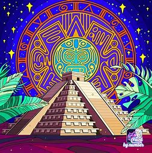
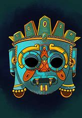
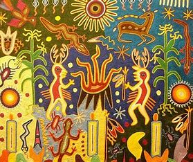

¿Qué fue?
La cultura mexicana es el resultado tanto de la tradición indígena como de la cultura española
impuesta por la colonización. Un poco menor (en comparación) fue el aporte de la cultura africana traída
por los esclavos que los propios europeos incorporaron a la naciente sociedad latinoamericana.
El México prehispánico es un período de la historia del país anterior a la conquista y colonización española,
que se dieron a partir de 1519-1521.

Mesoamérica
El término fue propuesto por Paul Kirchhoff, en virtud de que las culturas antiguas de los que hoy es México
no pueden estudiarse desde el enfoque geográfico de la actualidad. México como formación política nace en el
año 1810, con la declaración de independencia. Antes de la llegada de los españoles, el territorio estaba repartido
entre más de un centenar de pueblos, muchos de ellos extintos ya.
se trata de un área con una geografía sumamente diversa, en la que el norte es más o menos seco, y el sur adolece
exceso de lluvias. La vegetación y la fauna cambian no sólo en función de la latitud, sino también de la altitud
variable de la abrupta orografía del territorio.

Oasisamérica
Oasisamérica fue la última de las superáreas culturales del México precolombino en desarrollarse. Es resultado de un
lento proceso de introducción de las técnicas agrícolas de sus vecinos del sur los mesoamericanos. La antigüedad de la
agricultura oasisamericana es debatida, pues los indicios más antiguos, encontrados en Bat Cave, Nuevo México, parecen
tener entre 5000 y 3500 años de antigüedad. Uno de los factores del tardío desarrollo de la agricultura en esta región
es la carencia de agua. De hecho, nace en el corazón desértico de Aridoamérica, en los extensos territorios de Chihuahua
y Sonora (México), y en Arizona, Nuevo México, Nevada, Colorado y Utah, en el suroeste de los Estados Unidos.
.jpeg)
Aridoamérica
El desarrollo de las culturas agrícolas de Mesoamérica es tomada como el hito histórico que marca la separación de esta
superárea cultural con respecto a Aridoamérica, ocupada por pueblos cazadores-recolectores nómadas. Esto, como se expuso
en el apartado anterior, ocurrió aproximadamente en el año 2500 a. C. El primero que empleó este término fue Paul Kirchhoff
en 1954. Para diferenciar a los aridoamericanos de otros pueblos vecinos como los mesoamericanos y los indios de las praderas,
Kirchoff distinguió los caracteres económicos (pueblos dedicados a la recolección de vegetales que combinaban de modo secundario
con caza) y patrones de residencia (poblaciones nómadas) peculiares de la superárea. Incluyó en ella, además, a los pueblos recolectores
y pescadores que tenían una agricultura poco desarrollada (como los pueblos de la sierra de Tamaulipas).
